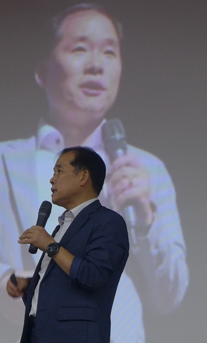
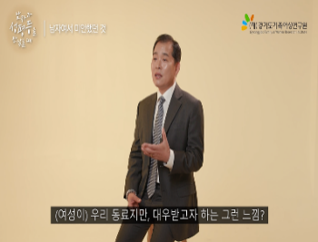
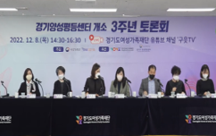
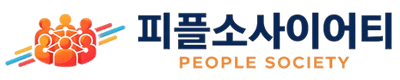

폭력예방 통합교육
성희롱·성폭력·성매매·가정폭력 예방을 실제 조직 사례와 대응 중심으로 다룹니다.
한국양성평등교육진흥원 폭력예방교육 전문강사공공기관 · 학교 · 기업 · 복지기관 맞춤교육
폭력예방 · 인권 · 청렴 · 직장 내 괴롭힘 · 장애인식개선 · 성인지교육
34년의 공직 경험과 조사·사건 대응 경험을 바탕으로 법과 실제 조직 현장을 연결하는 교육을 진행합니다.
교육분야
같은 주제라도 기관의 업무, 교육 대상, 실제 고민에 따라 사례와 교육 방식은 달라져야 합니다.
성희롱·성폭력·성매매·가정폭력 예방을 실제 조직 사례와 대응 중심으로 다룹니다.
한국양성평등교육진흥원 폭력예방교육 전문강사공공기관·학교·기업·복지시설의 일상에서 인권 문제를 발견하고 판단하는 기준을 배웁니다.
청탁금지법, 행동강령, 이해충돌방지와 공직윤리를 업무 속 선택과 사례로 이해합니다.
국민권익위원회 국가청렴권익교육원 등록 전문강사괴롭힘 판단, 건강한 조직문화, 관리자 역할과 사건 발생 시 초기 대응을 안내합니다.
편견을 넘어 서로 존중하고 함께 일하는 방법을 실제 사례를 통해 살펴봅니다.
한국장애인고용공단 위촉강사성인지 감수성과 성별 고정관념을 살피고 건강한 조직문화 개선으로 연결합니다.
한국양성평등교육진흥원 양성평등교육 전문강사자살위험 신호를 알아차리고 적절한 대화와 도움 연결을 통해 생명존중 문화를 만드는 교육입니다.
한국생명존중희망재단 위촉강사신고 발생 직후 관리자·동료·고충상담원·조사담당자·기관장이 무엇을 해야 하는지 역할별 초기 대응 기준을 다룹니다.
법정교육연구소 부설 공정조사센터공정조사센터 자세히 보기 →
대표강사 김범일
경찰공무원으로 34년간 근무하며 쌓은 현장과 사건 대응 경험을 교육에 담습니다. 예방에 그치지 않고 문제가 발생했을 때 조직과 담당자가 무엇을 판단하고 어떻게 대응해야 하는지까지 연결합니다.
기타 국가·전문자격행정사 · 평생교육사 · 사회복지사 · 개인정보관리사(CPPG) 1급
교육 실무자료
교육담당자가 교육을 기획하고 강사를 섭외할 때 확인할 기준과 체크리스트를 매일 한 편씩 자료실에 올리고 있습니다. 가장 최근 세 편을 여기에서 바로 보실 수 있습니다.
자료실 전체 보기협회·단체가 전 직원 대상 외부교육 강사를 섭외할 때 확인할 강의목표, 대상 적합성, 사례의 신뢰성, 계약·평가 기준을 설명합니다.
자료 읽기 →공공기관 전 직원이 적극행정의 의미를 업무에 적용하려면 재량의 한계, 사전 검토, 기록과 책임 보호 절차를 어떻게 확인해야 하는지 설명합니다.
자료 읽기 →학교 관리자가 인권교육에서 익혀야 할 학생·교직원 권리 판단 기준과 민원, 생활지도, 장애·차별 상황에서 절차를 점검하는 방법을 설명합니다.
자료 읽기 →새 가이드는 매일 아침 자료실에 올라옵니다. 이 화면의 세 칸도 새 글이 올라오면 자동으로 바뀝니다.
왜 법정교육연구소인가
사례를 통해 질문하고, 법적 기준을 확인한 뒤, 현장에서 취할 행동까지 연결합니다.
기관의 성격과 교육 대상에 맞춰 사례, 법적 기준, 설명의 깊이와 참여 방식을 조정합니다.
저서·콘텐츠
교육 현장의 경험을 실무자가 활용할 수 있는 책과 콘텐츠로 이어갑니다.
교육 현장
강연, 방송형 교육, 토론회 등 다양한 방식으로 교육 대상과 만나고 있습니다.
블로그에서 현장 이야기 더 보기

현장 강연 · 방송 출연
세바시 출연 강연과 핵심 법정교육 영상을 홈페이지에서 바로 확인하실 수 있습니다.
현장을 연결하는 전문활동
법정교육연구소를 중심으로 현장을 교육하고, 사회의 변화를 기록하며, 필요한 행정 전문영역으로 연결합니다.
공공기관·학교·기업·복지기관을 대상으로 폭력예방, 인권, 청렴, 직장 내 괴롭힘, 장애인식개선, 성인지 등 현장 중심 전문교육을 수행합니다.

인권·청렴·폭력예방·공공정책과 사회이슈를 취재하고 기록하는 인터넷신문입니다. 교육 현장의 문제와 정책·제도의 변화를 콘텐츠로 연결합니다.
피플소사이어티 신문보기행정 관련 전문 서비스를 제공하는 별도의 전문영역입니다.
교육→기록→행정법정교육연구소를 중심으로 이어지는 전문활동
교육 의뢰 절차
기관·대상·희망 주제를 알려주세요.
시간, 인원, 목적을 확인합니다.
기관에 맞는 강의안을 구성합니다.
대면 또는 온라인으로 교육합니다.
교육 문의
주제와 일정이 완전히 정해지지 않아도 괜찮습니다. 교육 대상과 목적을 알려주시면 적합한 방향을 함께 정리합니다.